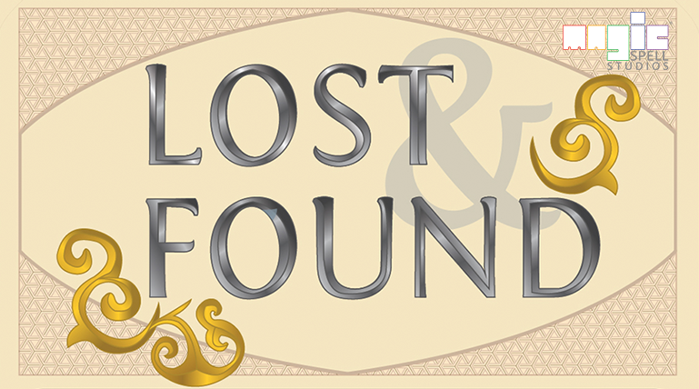
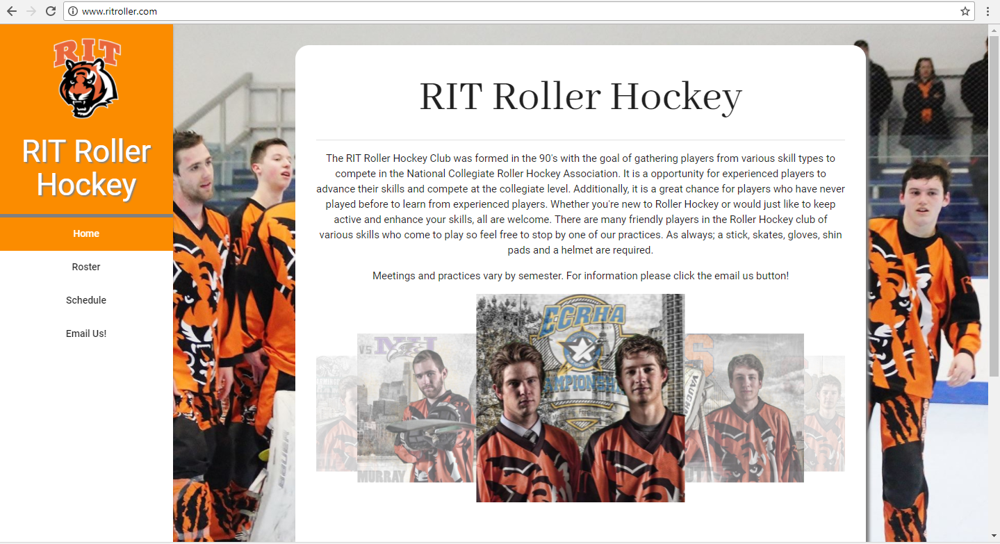
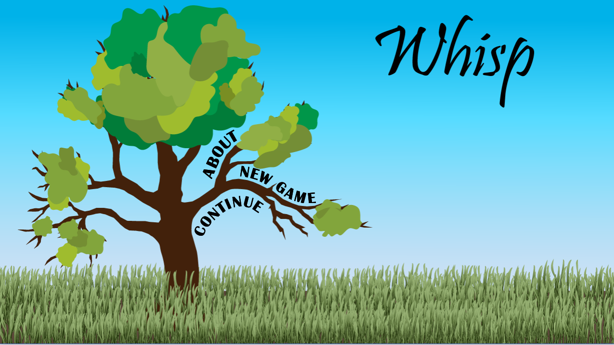

Projects
Project Rose
Project Rose is a seed grant funded interactive application using new approaches for pain reduction and healing. Duties included interfacing with senior faculty including a research scientist, a physician, and an interactive media expert, managing tasking for developers and testers, overseeing the QA pipeline by working with the development team and senior project manager to prioritize software iterations, preparing project plan using Microsoft Project and gantt charts, assisting with recruitment and on boarding of team members, and facilitating of team communication.
Lost & Found Game Series
Lost & Found is an award winning Game series for Learning that teaches literacy in medieval religious law set in 12th century Cairo. Lost & Found has been featured in both Rochester's Strong Museum of Play and the Smithsonian. The Lost & Found team is currently developing a new module for Islamic law literacy. Duties include managing tasking for a cross-functional team of designers, developers, knowledge managers and artists/illustrators, and facilitating communication between team members.
RIT Roller Hockey Website
This project was a personal web development project to greaten the web presence of the Division II 2017-2018 National Champion RIT Roller Hockey Team and their Division IV feeder team. I planned sprints and managed a backlog for the website creation using JIRA. I also did web development work on the site using HTML, CSS and JavaScript while utilizing the open-source Materialize Framework. I have worked on this project in my personal time over the course of the past 2 years.
Whisp
Whisp is a 2D platformer video game that follows a spirit as it tries to collect orbs to gain new abilities. Throughout the project I assisted in project management duties such as task tracking and finalizing and organizing milestone work for delivery. Additionally, I helped implement a proprietary physics engine and implemented orb and player abilities. Whsip was written in C# using Visual Studio utilizing MonoGame. This project was worked on over the course of 3 months in the spring of 2016.